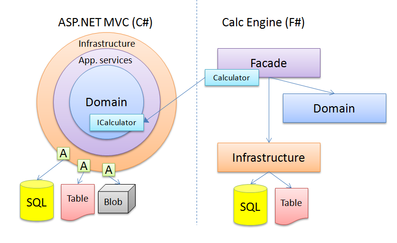

Sharing code between C# and F#
This is the next part of my 2 weeks trip from OOP to FP programming with F#.
You would say what's the big deal about sharing code between C# and F# if both of them rely on the .NET Framework and are compiled to the same IL? And in fact there is no a big deal. My concern is about how to do it properly from the architectural point of view.
In my last post I made a gentle introduction to my first real world experience with F# development. In this part I would like to focus on the integration I had to made between my ASP.NET MVC project developed with C# and my recomendation engine alorithm written in F#.
My first concern was about the kind of integration that would be needed from the business point of view. Technically I could use direct synchronous integration by using recommendation engine in process or relay on eventual consistency with use of queues or message buses, etc. From the business point of view, it would be better to have results as soon as the user makes a request. The point is that the recommendation engine has to be fast enough to allow this feature. Otherwise the user would have to wait too long time. With eventual consistency it would be also possible, but I would have to tweak some GUI screens to handle it properly.
Let's KISS. I always like simplest and most pragmatic take on the whole problem. Before I could make my opinion I had to benchmark my recommendation engine in terms of calculation speed. I generated a test data about 600 000 items (which is 30 times more what I expect to have in production) to make the recommendations on. The overall calculation process was around 0.5s which is fast enough to consider a direct synchronous integration. Before having 600 000 items in production I would have time to make another implementation if needed.
Let's look how the integration could be made:
Let's look on the left side of the schema. It's a classic hexagonal architecture (even if I drew the circles) that you've already seen in many projects. The domain is in the center of application and everything is wired using dependency inversion principle. I'm using StructureMap for wiring all the dependencies. In my domain I've defined an interface ICalculator which is supposed to be implemented by all kinds of calculators for recommendation engine. This simple interface looks like this:
1: 2: 3: 4: |
|
It's supposed to make a recommendation based on an item.
The more interesting part is on the right side with F# implementation. As you noticed, the architecture is quite different from the standard hexagonal architecture from the left side. Here are some reasons:
- I've never used F# in real world scenarios except playing around with "Hello world" examples. But I have a gut feelings that standard hexagonal architecture based on DI principle is just a nonsense in the FP world.
- The composition in F# is made on the function level and not on the object (component) level. So you deal differently with the coupling between layers.
- The Facade is supposed to provide an entry point for the C#/F# integration. It's responsibility is also to coordinate internal functionalities from Domain and Infrastructure layers.
So the overall architecture is quite straightforward and simple. I would like to notice that while for the MVC each layer is contained in the separate assembly, for F# every layer is defined in the same assembly. I haven't found any reason to make it more complicated.
We have a big picture of integration points. Let's look how the calculator is implemented in F#:
1: 2: 3: 4: 5: 6: |
|
Since I want to keep things simple and the calculation will be done in process I could inject my ICalculator instance into MVC controller by configuring my StructureMap container like this:
1:
|
|
Once you've done it you can declare dependency in MVC Controller constructor and the F# implementation will be injected.
I don't know if it's the best way to integrate it that way but it works for me and it's really simple. In the next post I'll focus on the internal architecture of my F# application and how I tried to achieve decoupling and testability.
type Calculator =
new : unit -> Calculator
Full name: sharingcodebetweencandf.Calculator
--------------------
new : unit -> Calculator